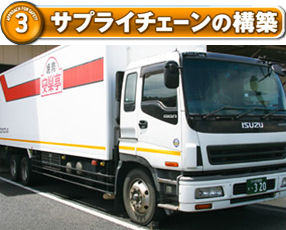

食材の調達、加工、配送、店鋪販売までの全ての機能を自社で持つ事で全プロセスを一元管理。工場、配送、店鋪をネットワークシステムでつなぎ、迅速な食材供給体制を構築。
毎日、安全・安心な食材が届いています。
毎日、安全・安心な食材が届いています。
◆調達・加工
安楽亭グループで使用する食材の仕入、加工、販売を自社工場にて管理
自社工場で安全・安心な食材が調達、加工され出荷されます。
自社工場で安全・安心な食材が調達、加工され出荷されます。
◆配送
工場から店鋪へと食材と届ける物流機能
温度管理の徹底や入荷基準、出荷基準を設ける事によって安全・安心な食材を速やかに正確に届けます。
温度管理の徹底や入荷基準、出荷基準を設ける事によって安全・安心な食材を速やかに正確に届けます。
◆ネットワークシステム
安楽亭グループ各社をつなぐネットワークシステム
各部門との情報共有や連携が迅速に行える環境を作り、安全・安心な食材の供給をサポートしています。
各部門との情報共有や連携が迅速に行える環境を作り、安全・安心な食材の供給をサポートしています。